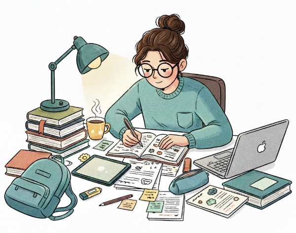
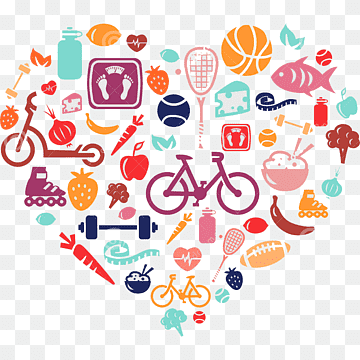
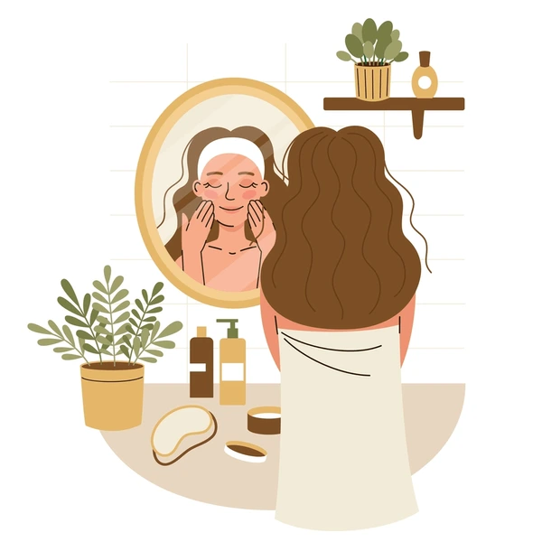
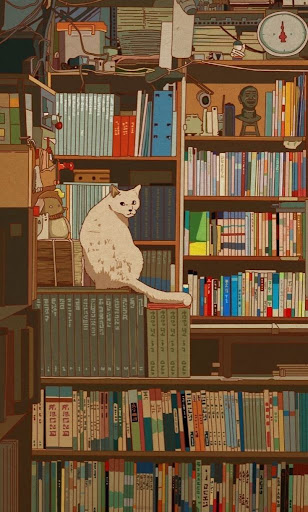

Hola, soy Rochi 👩💻
Esta es mi página

En esta página voy a llevar un seguimiento de elementos y habitos que te impulsan a mejorar a cada día, esta página esta dividia por secciones para usar como guia de cada ambito a mejorar o incluir.
Alimentación
"La alimentación no deberia girar en torno a la pariencia fisica, sino mas bien deberia ayudarte a tener energia, claridad mental, salud y binestar"

CÓMO ARMAR UN PLATO
El cuerpo humano necesita distintos grupos de alimentos para funcionar bien, y un plato equilibrado para lograrlo deberia tener:
- Proteína
- Carbohidratos
- Grasas saludables
- Fibra
- Agua
PROTEINAS
La proteína es al igual que el resto de los grupos antes mencionados algo fundamental en la nutrición humana, esto ya que la funcion de la proteina en nuestra alimentacion es construir musculo, ayudan a saciarse, estabilizan la energia, ayudan a la concentracion e influyen sobre las hormonas.
BUENAS FUENTES DE PROTEINA
Proteína animal
- Huevos
- Pollo
- Pescado
- Atún
- Yogur griego
- Queso
- Carne magra
Proteína vegetal
- Lentejas
- Garbanzos
- Tofu
- Soja
- Frutos secos
- Quinoa
CARBOHIDRATOS
Los carbohidratos no son el enemigo. Son la principal fuente de energia del cuerpo. Muecha gente intenta evitar los carbohidtratos pensando que son la principal causa de perder la linea, los satanizan como si fuera veneno para el cuerpo, cuando en verdad los carbohidratos son indispensables para tener una buena nutrrición y estar fuertes y sanos.
BUENAS FUENTES DE CARBOHIDRATOS
- Arroz
- Avena
- Papa
- Batata
- Pasta
- Pan integral
- Frutas
- Legumbres
GRASAS SALUDABLES
Las grasas saludables son escenciales para el cerebro, hormonas y energia, aun que a primera vista la palabra grasas nos pueda parecer sin pensarlo un segundo el verdadero enemigo de un cambi oen nuestro cuerpo ya que lo asociamos a comida mala como fritos, etc, son escenciales para el buen desarrollo de una nutrición equilibrada.
BUENAS FUENTES DE GRASAS SALUDABLES
- Palta
- Aceite de oliva
- Frutos secos
- Semillas
- Pescado azul
- Aceitunas
FIBRA
La fibra es otro de los puntos importantes de una buena alimentación, esta ayuda a la correcta digestión, a la microbiota, la saciedad y mantener la energía estable.
BUENAS FUENTES DE FIBRA
- Frutas
- Verduras
- Avena
- Semillas
- Legumbres
“Comer bien no debería sentirse como una cárcel. Debería sentirse como cuidar algo que tiene que acompañarte toda la vida: vos.”
Aprendizaje
"El aprendizaje es una de las cosas fundamentales de la vida, pero con las distracciones que existen hoy en dia es cada vez más dificil concentarrse y aprender lo que uno se propone. El aprendizaje es algo que no se puede dejar de lado, ya que sin eso no se puede avanzar en la vida, y es por eso que aca se prponen distintos metodos de aprendizajse para poder continuar con este buen habito segun cual sea tu forma de aprender"

METODOS DE APRENDIZAJE
- Active Recall
- Spaced Repetition
- Feynman
- Pomodoro
- Interleaving
- Deep Work
CÓMO PONERLOS EN PRÁCTICA
- Active Recall: El metodo consiste en repasar y ahcer pequeñas evaluaciones despues de repasar, evaluar que tanto entendiste u aprendiste del tema sin mirar los apuntes o lo que estas estudiando.
- Spaced Repetition
- Feynman
- Pomodoro
- Interleaving
- Deep Work
Hábitos
"Mejorar como persona y en distintos ambitos de tu vida, no se trata solo de seguir una serie de pasos de determinada manera, se trata sobre todo en la voluntad y la ocnstancia, seguiur cada paso de esta guia es en vano si no se va a ser de manera constante, continua, cada dia, incorporar cada paso a la rutina diaria, mejorar un 1% cada dia, eso es lo que va a hacer el verdadero cambio y efectivo cada uno de los habitos y consejos que hay en esta guia"

Acá van tus rutinas.
Skincare
"Esta sección no va a tratar solo de la mejor mascarilla para los puntos negros, aca vamos a volver a tocar el tema de la alimentación y además vamos a volver a tocar el tema de los habitos, hasta ahora pareciera que es una sección de relleno o repaso de dos secciones anteriores, pero no, esta seccion se trata sobre todo del aspecto exterior, pero para eso tambien se debe tocar el tema del interior, ya que nuestra apariencia es el reflejo de nuestro estado, el cuerpo y tu forma de vida hablan y se reflejan en tu exterior, si te alimentas mal se ve, y si no llevas una rutina constante e hifgienica tambien se nota, por eso esta saeccion sí va a ser un repaso de dos secciones anteriores pero tambien va a ser una guia de aspecto interior, ya que si bien todo lo interior se feleja hay veces que los cambios empiezan de fuera hacia dentro"

Acá va tu rutina facial.
Biblioteca
"Llegando finalmnete a la última sección de esta web, acá vamos a hablar, o mejor dicho a apreciar y analizar obras, frases de grandes pensadores, ideas, conceptos, libros, vamos a repasar cultura e ideologias, arte e historia, pensamientos y sentimientos de distintos escritores a travez de distintas epocas, es interesante e instructivo ver obras, poemas, libros e ideas del pasado con el pensamiento y realidad actual, y es interesante ver como gente del pasado tenia una mentalidad ta avanzada,ver como alguien que existio durante lso inicios del 1900 fue capaz de tener un pensamiento tan moderno como si fuera una persoan de la mismisima actualidad, en fin, esta seccion va a trtar sobre todo de pensar y aprender, de recuperar un poco de todo el saber a lo largo del tiempo y de toda la sabiduria que se ha plasmado en papel, de recuperar y no olvidar a gente que nos regalo esas ideas y reflexiones, que nos regalo su historia y emociones, y en mi opion, esta creo que es la parte más interesante o profunda de la web, claro, solo por una parte, pero eso lo voy a explicar en la seccion final..."

Acá va tu libros, frases, ideas, conceptos.
Fin
"Finalmente llegamos al final de esta web, de esta guia, esta ayuda, esta pequeña lección qu ediseñe para tener alguna idea de como empezar a mejorar o tomar las riendas de tu vida, en la seccion anterior dije que esa me parecia solamente de alguna forma la parte más profunda de esta web, y es cierto, porque la realidad es que esta web es en general lo que más profundo me parece, el hecho de indagar de la forma en que lo hicimos en cada uno de estos aspectos tan importantes me parece increible, el hecho de analizar esas mentes brillantes en "biblioteca", ya que no fue solo ver todas esas obras, libros, y etc, fue analizarlas, fue tambien formar una opinion y percepcion propia de cada linea que leimos, me parece increible haber profundizado sobre el aspecto exterior que llevamos en "skincare", como mejorarlo tanto de fuera hacia dentro y viceversa, porque sí, ambas son factibles aunque sea más conocida la de que los cambios solo se ven de dentro hacia afuera,
como conocimos la importancia de que para llevar un cambio real y sostenible en nuestras vidas, hay que tomar de la mano a los "habitos" y la constancia, la voluntad de llevar a cabo cada dia cada habito sostenidamnete en el tiempo, siendo flexibles con nosotros mismos tambien, sabiendo que mejorar al menos un 1% cada dia ya es un dia ganado, como analizamos distintos metodos de "aprendizaje" para cada quien, y como pueden usarse entre si para potenciar al otro y poder aprovechar cada una de las lecciones y saber guardar cada sabio consejo y conocimiento de la vida, como aprendimos la importancia de la "alimentacion" y que nunca debemos pasar hambre ni nada por estilo, sino que aprendimos a comer y comer bien, de manera responsable y tambien para que comer, que es lo que hace cada alimneto en nosotros y porque deberiamos comerlos de esa forma, todo este conjunto de conocimientos, todos estos consejos, todo se complementa y nso complementa para llevar la vida que queremso y como debemos, ya que el conocimiento es escencial, la alimentacion es indispensable, el exterior es la carcasa que llevaremos el resto de nuestra vida y todo cambio positivo e nuestra vida, resuenta tanto fuera como dentro de nosotros por eso es importante no dejar de lado nada, aun que no este en una seccion, es importante comer, estudiar, trabajar, descansar, el tiempo de ocio, todo ese conjunto hace efectiva una vida bien vivida"
Acá va tu libros, frases, ideas, conceptos.